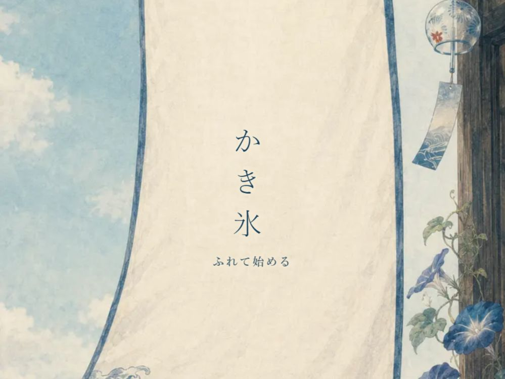
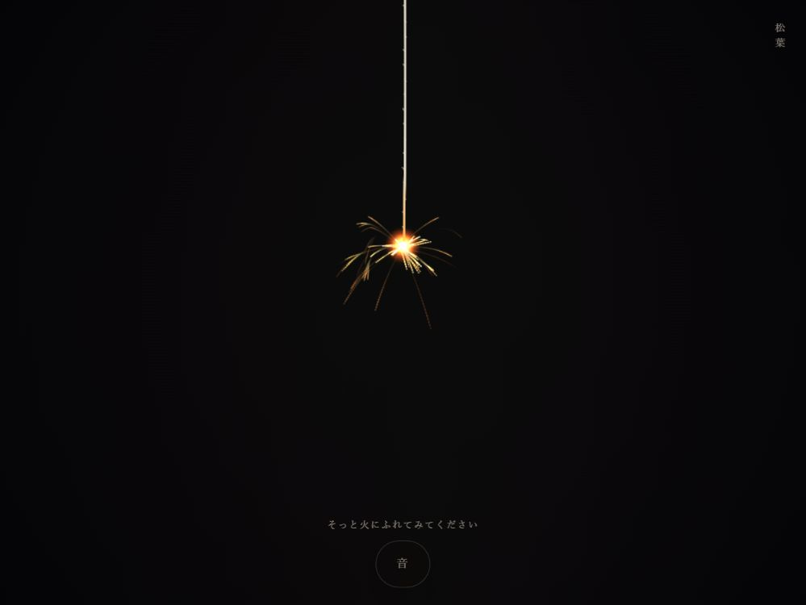

AI OUTPUT INSPECTION TOOL
よみとき
AIの返答を、測り直す。
AIの返答を8つの軸で分解し、事実・推論・意見を見分けながら、根拠のない断定や過剰な肯定を検品。本来あるべき温度の文へ組み直すWebツールです。
- 事実
- 推論
- 意見
- 励まし
- 根拠なき断定
- 過剰肯定
- 過剰な未来予測
- 出どころなき引用

つくるで、ひらく。
HUMAN × AI CREATIVE STUDIO
AI OUTPUT INSPECTION TOOL
AIの返答を、測り直す。
AIの返答を8つの軸で分解し、事実・推論・意見を見分けながら、根拠のない断定や過剰な肯定を検品。本来あるべき温度の文へ組み直すWebツールです。
触れて、試して、感じる。

氷を削り、五つのシロップを重ねる。

火花の変化と、消えるまでの時間を。

ひとつづきの日本の夏を、完全版で。
季節作品の常設無料公開は「かき氷」と「線香花火」の2作品です。
テーマ、体験設計、評価基準を決め、実機で検証。違和感を言語化し、完成まで修正を重ねます。
コード、画像、音、動きの実装をAIパートナーと進め、人が最終判断を担います。同じ企画を異なるモデルで実装し、表現や挙動を比較・検証する場合もあります。